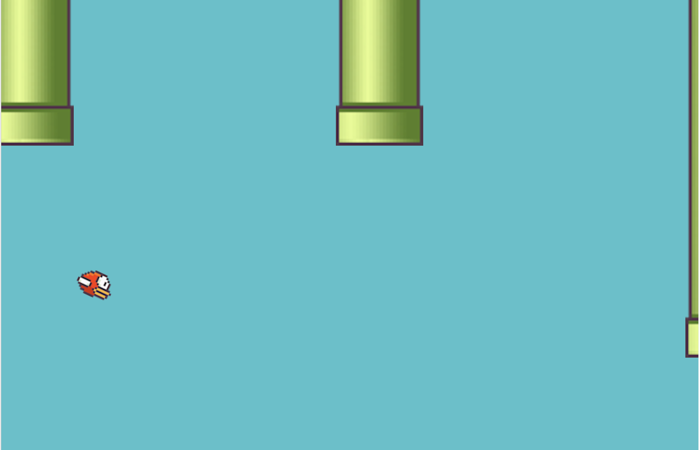

Flappy Phoenix - Flappy Bird clone using Phoenix LiveView
Richard Taylor • • 1m read I wanted to try out the new early release of Phoenix LiveView which allows you to perform real-time rendering updates from the server without writing any JavaScript.
The result is Flappy Phoenix - you can play it now on Heroku.
Although real-time games aren’t really the goal of the project, it is so performant you can get pretty good results, so why not.
The source code is available on GitHub. It has some issues 😊.